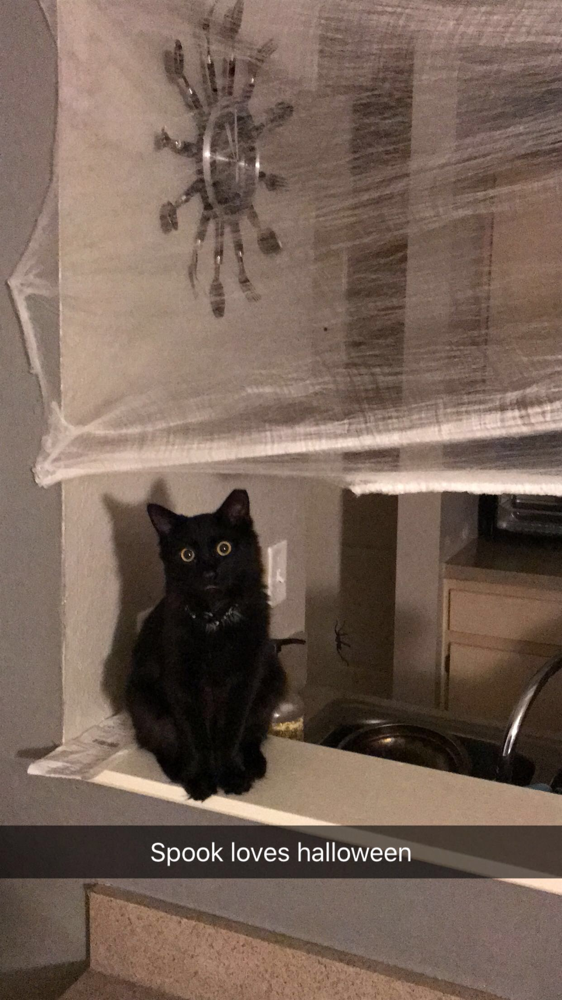
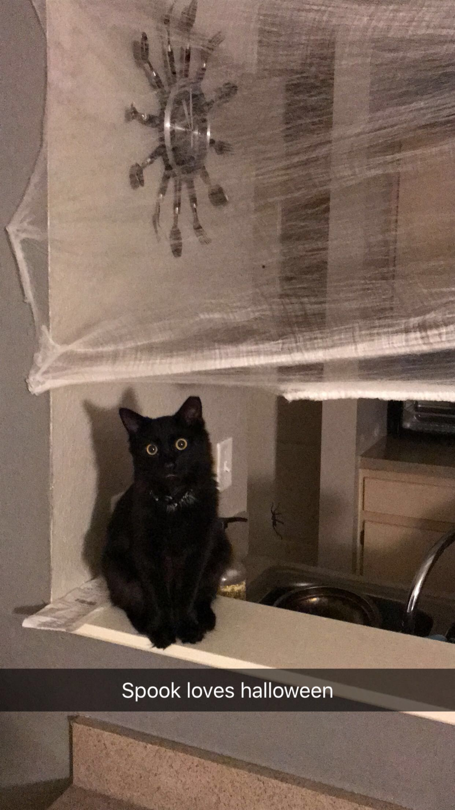

I'm Ronald Shevchenko, and I'm currently a senior in the Computer Science Program at the University of North Florida. I was born in Brooklyn, New York, however was transplanted to the retirement town of Palm Coast, Florida at an early age. I progressed through elementary, middle, and high school all in Palm Coast until I dual enrolled at Daytona State College during my sophomore year of high school to get a headstart on my associates degree. I continued this through graduation, and got my associates degree before completing high school. I graduated in December of 2016 from Matanzas and took prerequisites that the University of North Florida required at Daytona State College until I immediately transferred to UNF in the Fall. My life has consisted of playing tons (and I mean TONS) of video games throughout my journey, of which I continue to play to this day. My sense of majoring in Computer Science stems from the fact that I've worked with computers almost my entire life, and the innerworkings has always fascinated me from developing my own basic webpages to programming entire video games (I thought I was amazing at the time, however, looking back was very basic). My interest only piqued even more after taking an Intro to Computer Programming course at DSC that taught me basics of Python.
Enough about education - let's talk about the love of my life, Spook. He veered me onto a track that I'd never thought I'd stumble upon at my age: owning a cat. I've always wanted one since I was little, however, being dog people, that's all I've grown up with. He lived right behind my apartment's building after I moved to Jacksonville, and would run up to me whenever I came home and unlocked my door. I quickly gained his trust by feeding him (and the other cats around) yummy food (from CANS!). He soon started entering my apartment and would cuddle with me on the couch while I was watching TV but would quickly leave after being 'spooked' by noises. I took him and the other kittens to the vet to get them spayed, vaccinated and checked for microchips. Thereafter, I stole him and wouldn't let him leave the apartment. He was now mine and it's the best decision I've ever made.
My hobbies include very techy things: playing video games, coding, and building computers. Others are playing with my cat, cooking food, and decorating.
My interests include calligraphy, interior design, artificial intelligence, tanning, the Apple ecosystem, and learning about new tech developed around the world.
 

My education goals spans through my doctorate degree - though I want to mostly get this degree just to have "Doctor" affixed to the beginning of my name. I plan to work directly in the software engineering field, though not entirely sure of what type of work I'd be doing.
I'm currently going for my bachelors and will soon transition into my masters degree afterwards. I attended Daytona State College from 2014 to 2017 during High School and currently attend University of North Florida starting from 2017.
My Certificates: